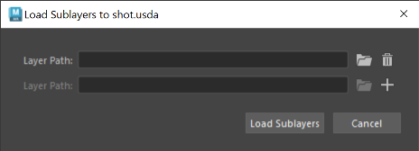

Load layers in the USD Layer Editor
You can load one or multiple existing layers into the layer stack of a stage. The loaded layer will be nested under the selected layer or the root layer if no layer is selected.
To bring up the Load Sublayers to <LayerName> dialog, do one of the following:
- Click
- Right-click a layer > Load Sublayers...

Use this dialog to import existing USD files into your Layer Stack.
Specify the existing layer's file path on disc or use the folder icon to locate the file with the file browser. Tip: Once you have selected valid file(s), under File Options, you can select
 Make Path Relative to Parent Layer Directory, if applicable. With this toggle, you can load and save USD sublayer files as relative to your parent file directory. To learn more about saving USD files relatively, see Make Path Relative.Tip: In your file browser, hold
Make Path Relative to Parent Layer Directory, if applicable. With this toggle, you can load and save USD sublayer files as relative to your parent file directory. To learn more about saving USD files relatively, see Make Path Relative.Tip: In your file browser, holdShiftorControlto select multiple files for layer import.Important: If you have Windows > Settings/ Preferences > Preferences > Files/ Projects > File Dialog set to OS Native, you will see your operating system's file browser instead of this dialog.Click
 / to add/remove a sublayer from your import, respectively.
/ to add/remove a sublayer from your import, respectively.When you are finished you can select Load Sublayers to complete your layer import or Cancel to undo this action.
The contents of the newly loaded sublayer(s) are reflected in the Viewport and Outliner. The parent layer to the loaded layer(s) receives an asterisk to indicate unsaved edits.
If you specify an invalid file path, it will be added to the layer stack but display with a warning badge. You will not be able to mute it, set it as the target layer or reorder it in the layer stack. The only available operation is to right-click the layer and select Remove.